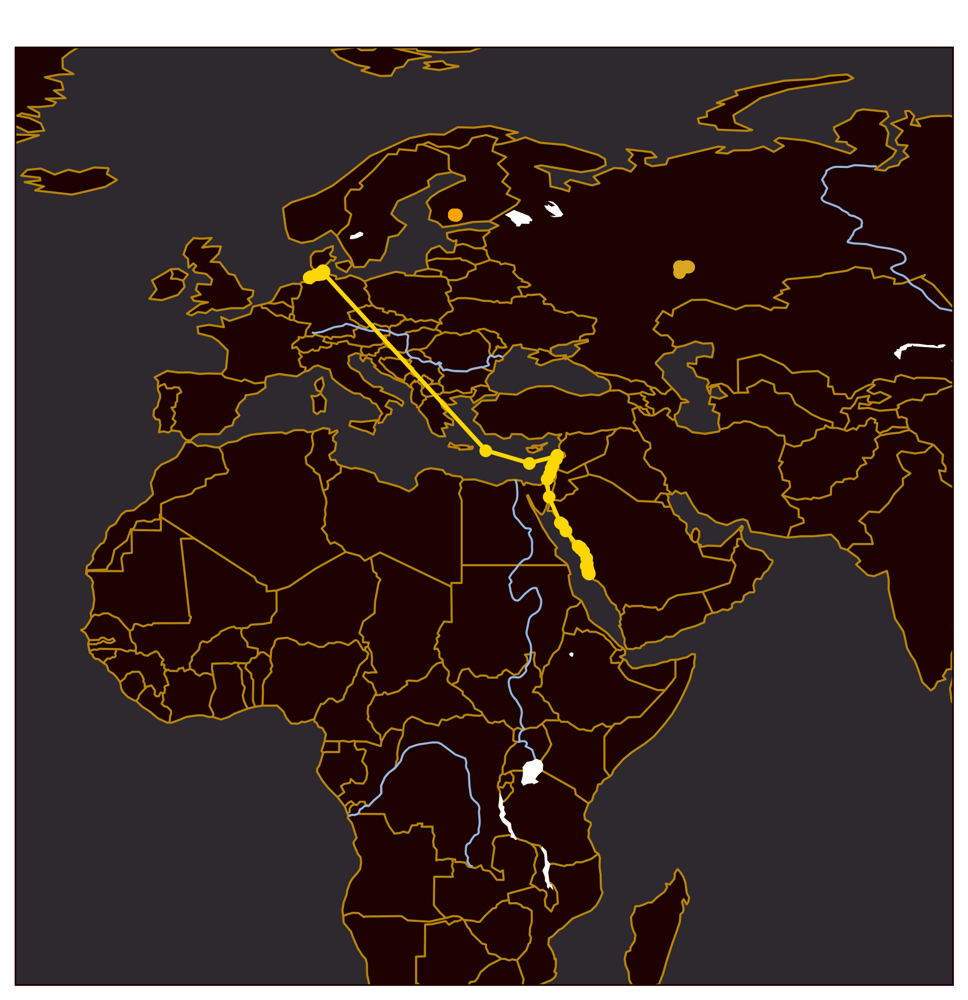

Built a model in vanilla python, simulating the interactions of Pyramidal neurons, PV, VIP and SST interneurons. This let me explore how sensory uncertainty and prediction error work together to influence belief updation.
OpenAI's API has a lot of features that make building agentic AI easy. LLaMa is free and open source, but lacks some ease of use. So these notebooks let you format your outputs and chain prompts more easily in LLaMa.
I also built multiple agentic AI using Gemini, from a 'cognitive companion' that quickly summarises text and rephrases it into exercise questions, to a vacancy scraper that leverages AI's ability to work with fuzzy logic to scrape job postings from major websites and compile the ones that fit you.
Not letting AI generate any text after I saw the wave of slop that's invaded the internet
Built a transformer model, with multi-headed self-attention blocks, feed-forward connections and fully connected layers, effectively building a miniature GPT.
The output (after training on shakespeare's works) works if you squint
Got to work on a Movebank dataset detailing the migration of the Lesser black-backed gull. General data analysis and visualisation, as well as using clustering to identify some hotspots frequented by these gulls.
Plots by yours truly

WEB / DESIGN
This very website
This website is built entirely on HTML and CSS, avoiding the slowing down that comes with JS-heavy webpages. I've also implemented some pre-loading, so that subpages are partly loaded when you hover over the link.
Built several imagej macros that help automate the very tedious process of splitting fluorescent microscope images into channels and saving each one as a distinct file. Especially considering the sheer number of images that build up. Luckily, these macros don't even render each image, saving device RAM and completely processing a folder of images in minutes and one file (see video) in seconds.
All hail open source
NEUROFEEDBACK
Neurofeedback game to help you relax
Built a game using Pygame, combined it with Timeflux to read the strength of alpha-band brain waves coming from an EEG device. The game incentivised relaxation, slowing down the in-game character and giving more points the longer you maintained a relaxed, alpha heavy state.